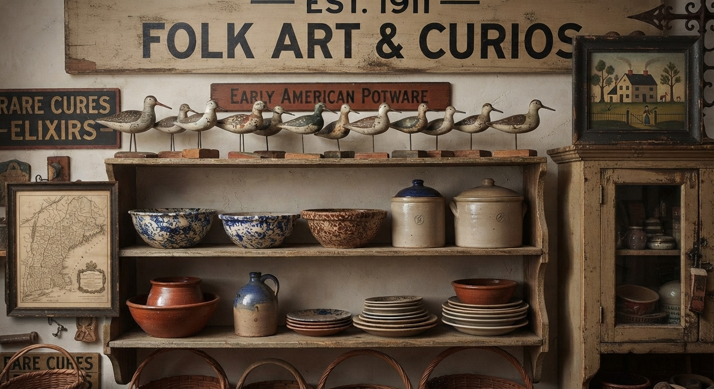
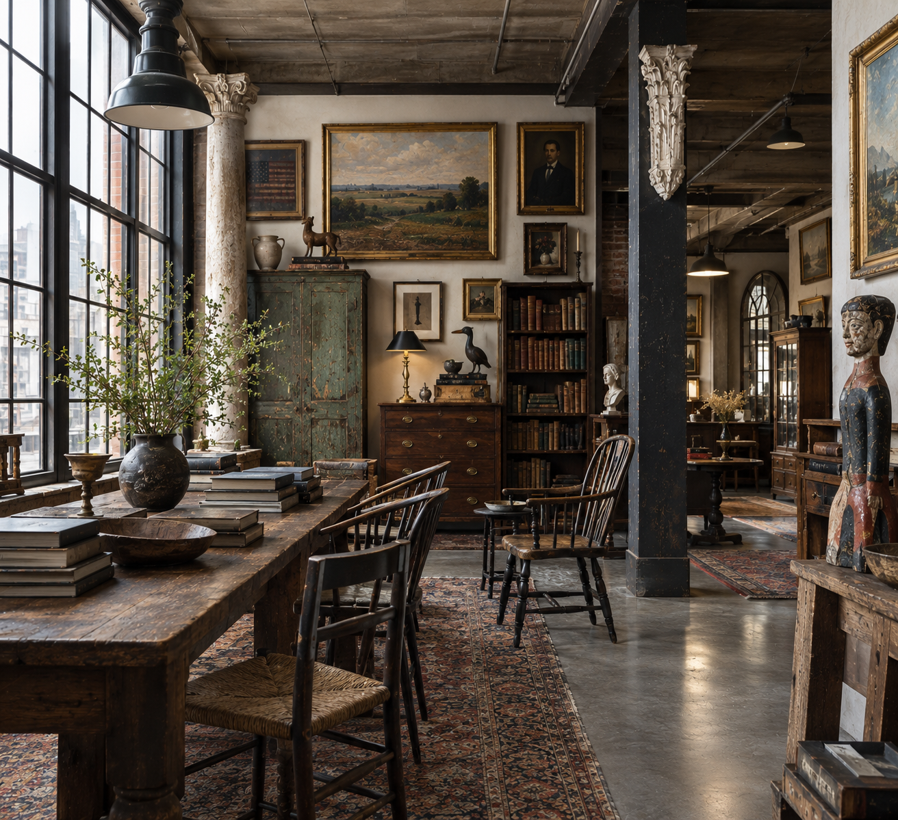
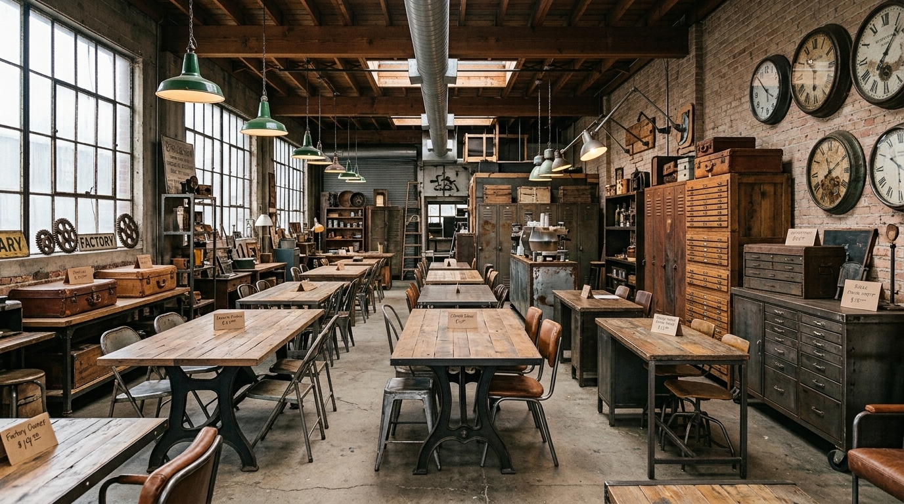
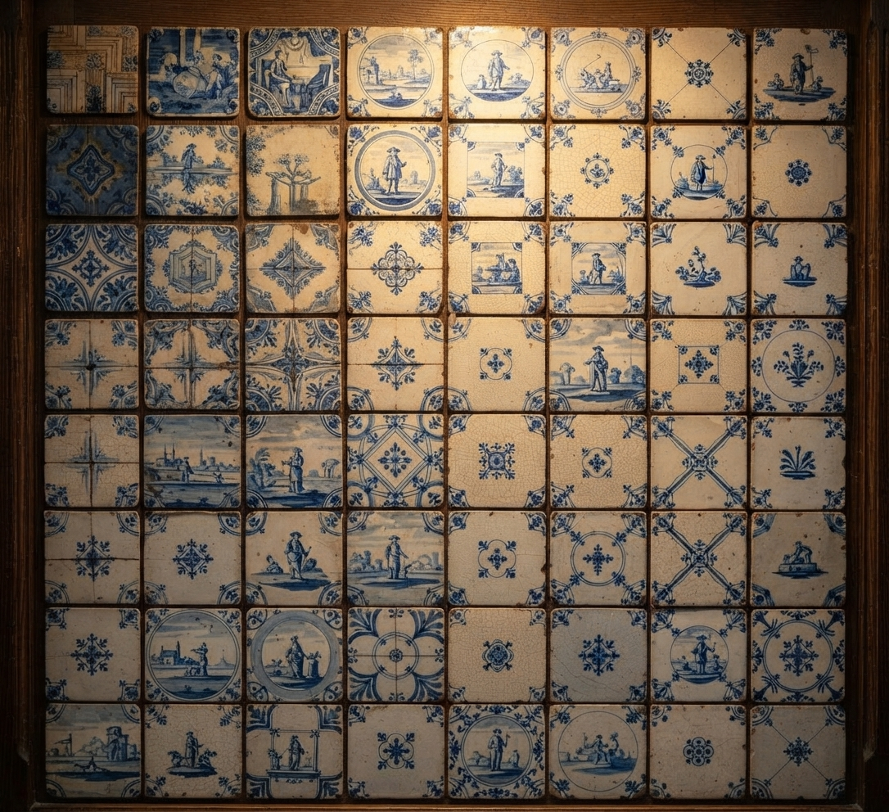
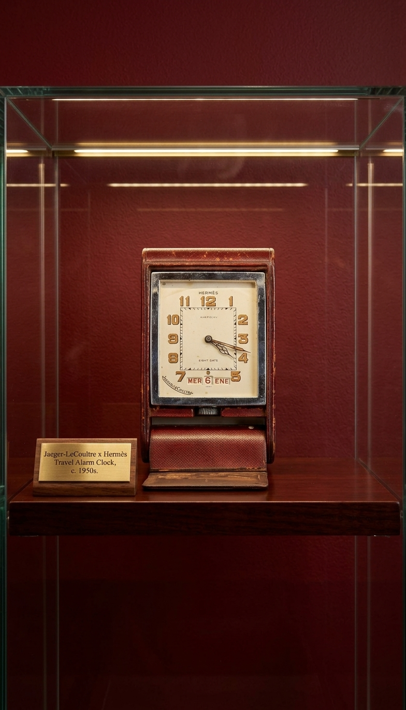
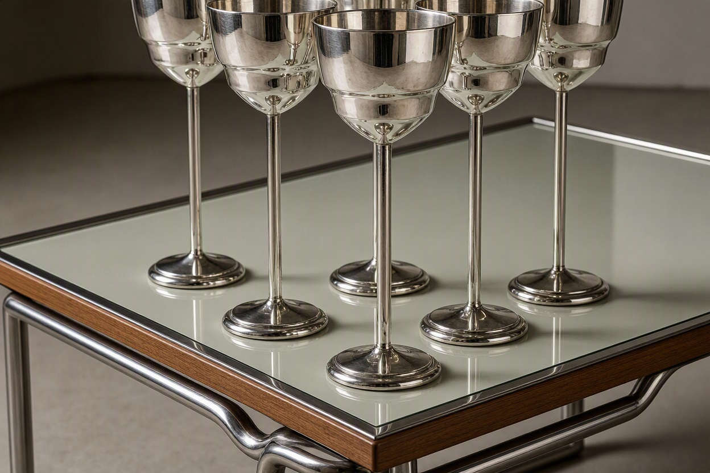
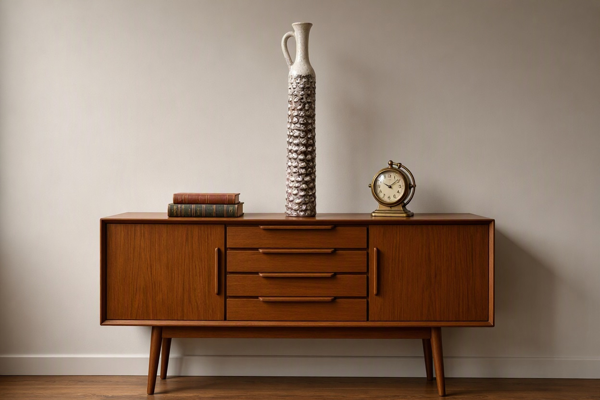
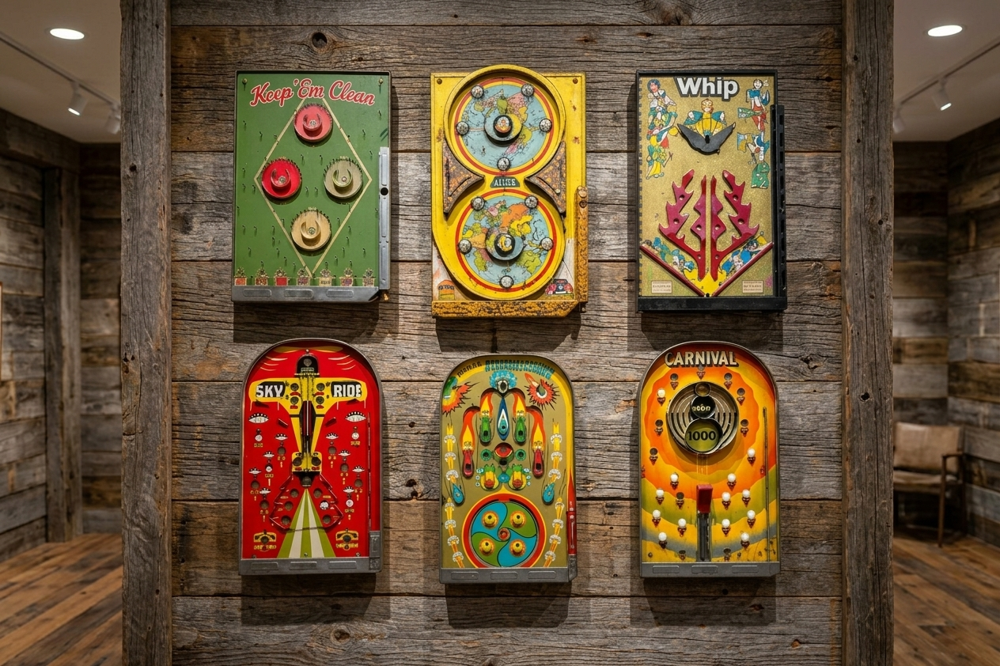
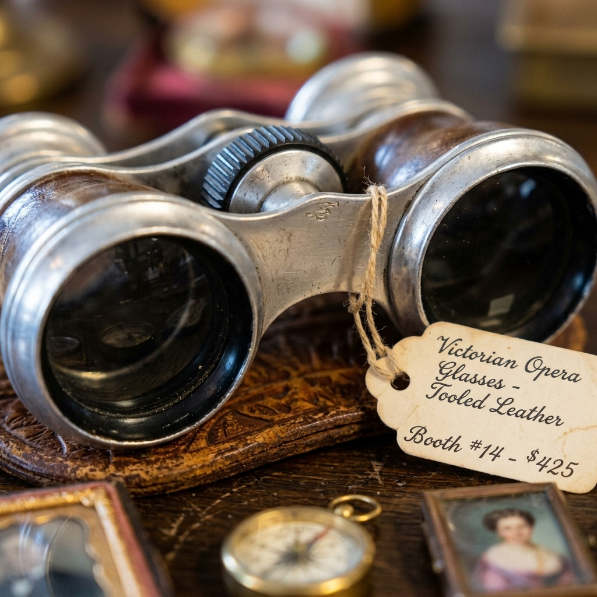
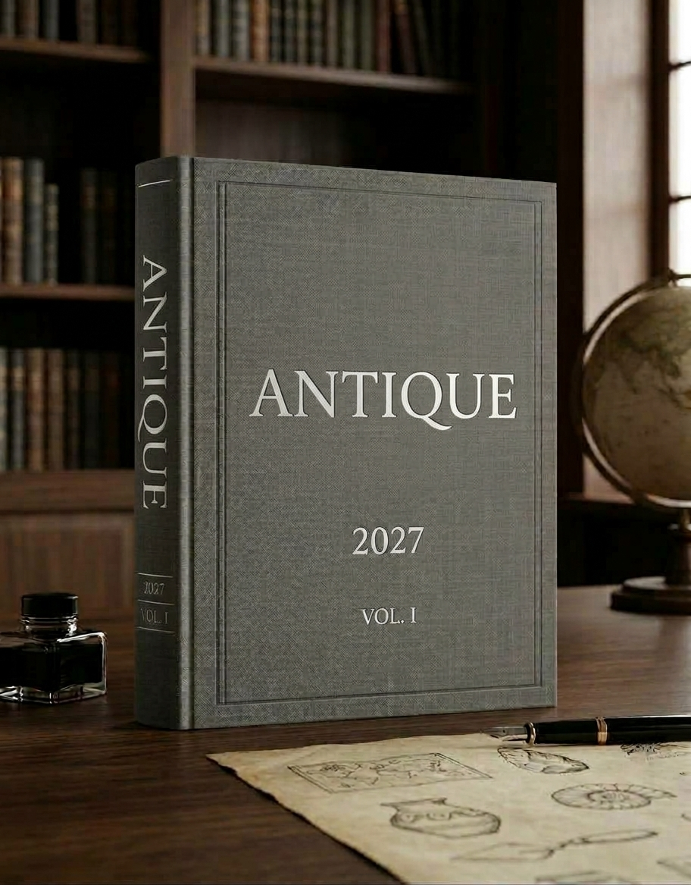

Online listings are useful for discovery. They are not built to preserve the character of a business, the depth of a specialty, the history of a dealer, or the physical world inside a shop.
ANTIQUE is conceived as an annual North American reference to the businesses, specialties, regions, histories and material worlds through which North America buys, sells, studies and preserves objects with history.
The purpose is practical.
To make a fragmented trade legible. To put the specialist beside the region, the dealer beside the material, and the shop beside the history that gives it meaning.

Who the business is, where it operates, what it specializes in and the history behind its place in the trade.
The materials, periods, regions, disciplines and categories that give a dealer or specialist genuine depth.
Shops, districts, fairs, regional concentrations and the physical geography through which the trade actually moves.
A durable annual record that remains useful after websites, listings, inventories and search results change.
Business identity, location, specialties, established date, contact information, website and a concise description of the dealer's field.
Properly licensed dealer-supplied imagery and, where commissioned, original documentary photography establish the visual character of the premises, material and inventory.
Selected dealers receive deeper editorial treatment explaining their history, expertise, material and place within the trade.
Regional clusters, antique districts, fairs, specialist concentrations and places where the trade takes physical form.



Established dealers working in furniture, decorative arts, Americana, books, textiles, architecture, garden, industrial and related fields.
Category specialists whose knowledge is concentrated in a particular period, material, region, maker, object class or collecting field.
Physical spaces where objects are displayed, studied, sold, restored, collected and connected to their next owners.
Specialists preserving objects, materials, finishes, construction methods and knowledge that might otherwise disappear.
Professionals whose work depends on provenance, identification, chronology, comparison, valuation and documentary evidence.
Museums, libraries, archives, historic properties and private collections that preserve important bodies of material history.

Research establishes chronology, terminology, provenance, regional context, makers, materials and the documentary evidence surrounding an object or field.
Fieldwork places that evidence in the physical world: the shop, workshop, storage room, fair, collection, district, archive or property where the material actually exists.
Documentary photography and editorial work then create a coherent record rather than simply reproducing inventory.
A commissioned documentary treatment developed around a dealer's history, specialization, premises, collection, archive, family papers, material knowledge and place within the larger antiquarian trade. Research, interviews, fieldwork, photography, archival work and editorial development are scoped to the undertaking.
A separate commissioned documentary record devoted specifically to a dealer, specialist, collection, shop, family history or material field. The resulting publication can become a permanent institutional record of the business and the knowledge behind its work.



Dealers provide only imagery for which they hold or control the necessary rights. Image licensing is treated as a straightforward part of the publication process rather than as an assumption attached to ownership of the physical object.
Where original documentary photography is commissioned, the field record is developed around the premises, material, people, objects and processes that make the business distinctive.
The physical ANTIQUE publication brings together dealers, specialists, regions, material categories, shops, histories, documentary images and reference information into one coherent annual record.
It is intended to be useful to the people already involved in this world: dealers, collectors, designers, architects, museums, libraries, researchers and institutions whose work depends on finding the people who know the material.
The publication is not simply a directory. It is a reference to the physical trade and to the knowledge that makes that trade possible.
Each edition becomes a record of the trade at a particular moment: who was working, where they were working, what they knew and what material was moving through their hands.

The images presented on this website are not the photographic record of the ANTIQUE publication.
Website imagery may include original photography, hand-drawn and digitally constructed illustrations, photographic composites, interpretive reconstructions, publication mockups, and images created or modified with generative image tools. These visuals are used to establish atmosphere, subject, material context and the intended character of the publication.
Where appropriate, captions identify images as documentary photography, composite, illustration, reconstruction or mockup.
The ANTIQUE book is different. Images published in the physical book will be real photographic or archival images of actual objects, places, businesses and material evidence. Generative imagery will not be used as documentary evidence in the book.
The distinction is intentional: the website presents the project; the book records the material world.
We are speaking with antique dealers, specialists, galleries, restorers, conservators, appraisers, collectors and institutions whose work forms part of the North American material record.
We are also interested in organizations with a company history, collection, premises, archive, specialization or body of knowledge that warrants a deeper documentary record of its own.